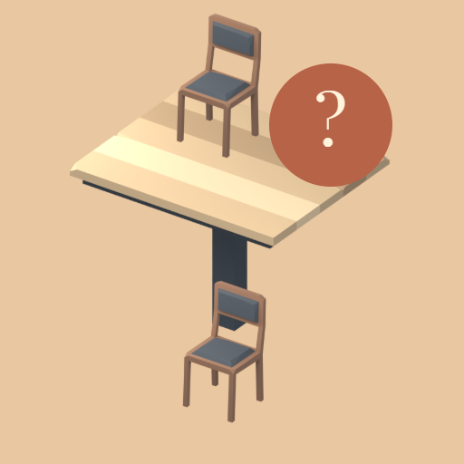

<- all projects

Cafe Seating Files
PC
Volume
Live
Follow the clues. Seat the regulars.
Alba finds a casebook under the espresso machine. Reconstruct ordinary mornings at a neighborhood café and discover the four regulars whose quiet help kept its doors open. Each case is a classic logic-grid puzzle: match Ana, Bruno, Caio and Dia to four seats, four drinks and four arrival positions using numbered clues about arrival order, neighboring and opposite seats, exclusions and people identified by their drink. The scenery never hides a rule. After solving, the archive keeps the full deduction trail. There are 100 cases across five story chapters and three difficulty levels, plus a weekly case from a 52-case collection and 90 archive cases.